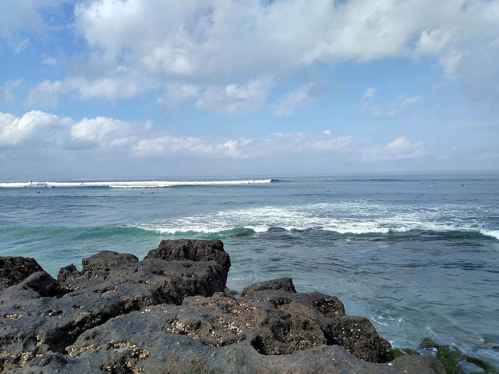

Look · Method of reading
A percent needs a denominator.
Most offshore comparisons fail in the unit, not in the enthusiasm. Name the series before you let it move a decision.
Five numbers that get stacked in one sentence
- Cotality’s national dwelling values, up 2.7% in the year to August 2026, and down 3.6% from the March peak.
- Cotality’s gross rental yield, 3.7% in the July reading carried in the August 2026 chart pack, with rents up 5.9% and still ahead of the 3.3% wage growth Cotality set beside them.
- Bank Indonesia’s Bali primary-house index, up 1.06% year on year in the fourth quarter of 2025.
- BPS foreign arrivals, up 9.72% in 2025.
- A developer’s projected return, printed on a project page, often between the mid-single digits and the high teens.
The first is a capital-value index of Australian dwellings. The second is a gross rent over value, before interest, costs, and vacancies you actually lived. The third is new houses in a developer survey. The fourth is people. The fifth is a model. A chart that runs them into one “Bali versus Australia” line has mixed five questions.
Yield and wages as stated in Cotality, Monthly Housing Chart Pack, August 2026.
What a serious chart is allowed to claim
It can show that the official new-house index in Denpasar has been quiet while arrivals and accommodation have not. It can show that Australian capital cities no longer move together: Perth’s annual gain and Sydney’s annual fall were both true in August 2026. It can show that a gross yield near 3.7% is the published national picture, so a marketing line that says Australian property pays 2–3% is using a number under the index, and a line that says a Bali villa pays the mid-teens is using a projection over no index at all.
Kiss Developments’ homepage sets “15%–20% annual returns” against “2–3% in traditional property markets,” and a five-to-seven-year payback for off-plan buyers at named projects. Those are their claims. They are not Cotality, and they are not BPS. The comparison is the genre. The repair is to separate the genre from the series.
kissgroup.co, homepage claims as published.

The file this site will use
Published statistics, named. Operator claims, attributed to the operator. KHC’s own return model, held until the claims register has a source row. If a number cannot survive that sort, it does not get a bar on these notes.